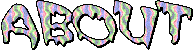

AZAD NAMAZIE
AZAD NAMAZIE

Azad Namazie is a writer, artist, and digital archivist from Los Angeles whose practice interweaves memory, mythology, and multimedia technology. Their work has been featured at Celebration Theatre, Zephyr Theatre, and Hollywood Fringe Fest, while their poetry has appeared in Mizna Journal, About Place Journal, and FRUITSLICE, among others.
Azad’s plays include Another Birth (commissioned and produced by Celebration Theatre & Greenway Arts Alliance) and LOCAL PROPHETS: A Play of Near Collisions (The Joy Who Lived Festival 2025).
Recent dramaturgical credits include Memory Lane is a Desert Road (8 Ball Productions at Zephyr Theatre), written by Nabra & Michael Nelson and directed by Sarah Showich. Azad also curated a pre-show archival exhibition for A Third Space (Hollywood Fringe Festival 2024).
As an archivist, they have contributed to the preservation of born-digital and audiovisual collections at UCLA Library, the Los Angeles County Museum of Art, Skid Row History Museum, and Viet Rainbow of Orange County. They enjoy working collaboratively with community-based organizations to build and maintain autonomous digital archives that run on cost-effective open-source platforms and tools.

This is my very serious staff portrait.